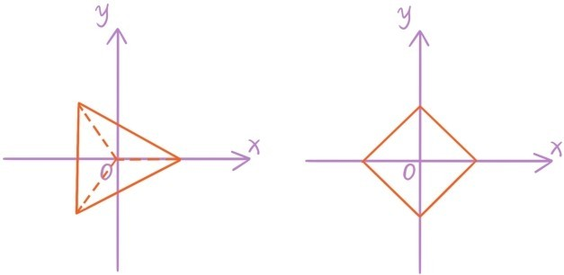
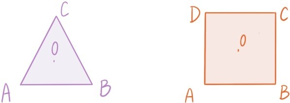

先来回顾我们非常熟悉的实系数一元二次方程ax2+2bx+c=0。通过配方法转化为后，如果判别式b2-ac<0，则方a2程在实数范围内无解，但在复数范围内还可以继续求解。比如方程x2+2x+4=0，通过配方法转化为(x+1)2=-3，进而得到x+1=或者x+1=，所以方程有两个共轭的虚根x1=-1+，x2=-1-。相应的多项式在复数范围内也可以分解
根据同样的道理，若实系数一元二次方程ax2+2bx+c=0的判别式b2-ac<0，则方程总有两个共轭虚根z， ，多项式总可分解
ax2+2bx+c=a(x-z)(x-
另一类可以直接在复数范围内求根的一元多项式方程是分圆方程
xn-1=0
先来看简单的分圆方程x4-1=0。相应多项式可以分解为
x4-1=(x2+1)(x2-1)=(x+i)(x-i)(x+1)(x-1)
所以方程x4-1=0恰有4个根：1，i，-1，-i。
再来看分圆方程x3-1=0。相应多项式可以分解为
x3-1=(x-1)(x2+x+1)
利用配方法解方程x2+x+1=0得到两个根。所以分圆方程x3-1=0恰有3个根：1，。
一般的分圆方程xn-1=0也是恰有n个根，寻找这n个根需要用到复数的三角形式。假设x=r(cosθ+sinθi)，0≤θ<2π是方程的一个根。代入方程后得到rn(cosnθ+sinnθi)=1，所以r=1，θ=0，，，…，。因此分圆方程xn-1=0恰好有n个根
注意对于0≤m<n，xm=，且。这n个根将以原点为圆心的单位圆分成n段相等的弧，这正是分圆方程这个名称的来历。依次连接x0，x1，x2，…，xn-1就会构成一个正n边形，原点是正n边形的中心。

在复数范围内二次方程和分圆方程都能顺利求解，接下来自然是更复杂的代数方程求解问题。历史上，人类经历了很长时间的探索才陆续找到了三次方程
a3x3+a2x2+a1x+a0=0
和四次方程
a4x4+a3x3+a2x2+a1x+a0=0
的根式求解方法。但是这种根式求解方法无法推广到四次以上的代数方程。最后是数学王子高斯第一次严格地证明了每个代数方程都至少存在一个根，这个结论称为代数学基本定理。
提问时间
8.5.1 在复数范围内求解方程x2-6x+13=0和2x2-4x+5=0。
8.5.2 证明：若z是实系数多项式方程anxn+an-1xn-1+…+a1x+a0=0的一个根，则 也是方程的根。
8.5.3 证明分圆方程xn-1=0的n个根x0=1，x1，x2，…，xn-1之和等于0，并将这个结论与习题7.2.1做比较。（提示：xm=x1m，且x1n=1）
8.5.4 求方程x4+1=0和方程x3+1=0的所有复数根，要求把结果写成坐标表示。［提示：x6-1=(x3+1)(x3-1),x8-1=(x4+1)(x4-1)］
8.5.5 O是下图坐标平面上的一个正三角形△ABC的中心，证明：若向量对应的复数是z，则对应的复数是；若向量对应的复数是z，则对应的复数是。

8.5.6 O是上图坐标平面上的一个正方形ABCD的中心，证明：若向量对应的复数是z，则对应的复数是；若向量对应的复数是z，则对应的复数是。